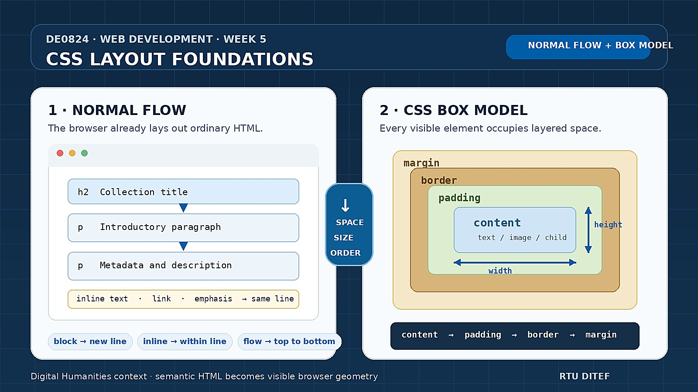

Week 5 goal: understand the browser's basic layout model. By the end of
the session you should be able to reason about normal flow, content, padding, borders,
margins, width and height, box-sizing, overflow, and basic positioning—and
inspect all of these in browser Developer Tools.
1. From styling to layout
In Week 4 we mostly changed how content looked: fonts, text sizes, colors, and backgrounds. But every visible HTML element also occupies space. The browser must decide how large that space is and where it belongs relative to other elements.
Starting point · A small digital collection record
<article class="record">
<h2>The Castle</h2>
<p>Franz Kafka · 1926</p>
<p>A bibliographic record from a digital literature collection.</p>
</article>Week 4 CSS · Appearance
.record {
background-color: #f4f1e8;
color: #243b53;
font-size: 18px;
}
Prediction: why does the background extend farther than the text?
Why does another <article> normally appear below this one? What creates
space between the text and the edge of its background? These are layout questions.
2. Layout already exists: normal flow
A page has layout even before we write layout CSS. In normal flow, block elements such as headings, paragraphs, sections, and articles normally form boxes that follow one another vertically. Inline content such as links and emphasized text normally participates in lines of text.
Block behavior
<h2>Title</h2>
<p>First paragraph.</p>
<p>Second paragraph.</p>These elements normally form separate boxes, one after another.
Inline behavior
<p>
Read the <a href="...">catalogue</a>
for details.
</p>The link normally remains inside the surrounding line of text.
The display property controls the type of box an element generates. For now,
recognize these useful values:
| Value | Beginner working model |
|---|---|
block | Creates a block box that normally starts on a new line. |
inline | Participates in a line of text; width/height do not behave like a normal block. |
inline-block | Flows inline but can be sized more like a block. |
none | The element generates no display box. |
3. The CSS box model
The central Week 5 mental model is that an element generates a rectangular box. From the inside outward, we can distinguish content → padding → border → margin.
| Area | Meaning |
|---|---|
| Content | The element's actual text, image, or child content. |
| Padding | Space between the content and its border; the element's background extends through it. |
| Border | The boundary surrounding the content and padding. |
| Margin | Space outside the border, separating this box from surrounding boxes. |
Say it in order: content → padding → border → margin. If you can identify those four regions in Developer Tools, many apparently mysterious spacing problems become ordinary geometry.
4. Padding: space inside the box
Example 1 · Give content room inside its background
.record {
background-color: #f4f1e8;
padding: 20px;
}Padding belongs inside the element's border. It can be controlled separately on each side:
Example 2 · Four padding properties
.record {
padding-top: 10px;
padding-right: 20px;
padding-bottom: 10px;
padding-left: 20px;
}The shorthand form can describe several sides at once:
padding: 20px; /* all four sides */
padding: 10px 20px; /* top/bottom, left/right */
padding: 10px 20px 30px; /* top, left/right, bottom */
padding: 10px 20px 30px 40px; /* top, right, bottom, left */For four values, read clockwise from the top: top → right → bottom → left. You do not need to memorize every shorthand combination immediately; use DevTools and the reference when needed.
5. Borders: make the boundary visible
Example 3 · Border shorthand
.record {
padding: 20px;
border: 2px solid #243b53;
}The shorthand combines three separate properties:
border-width: 2px;
border-style: solid;
border-color: #243b53;
A small border-radius can round the corners:
border-radius: 8px;6. Margin: space outside the box
Example 4 · Separate records from one another
.record {
padding: 20px;
border: 2px solid #243b53;
margin-bottom: 24px;
}Padding
Space inside the border, between content and border.
Margin
Space outside the border, between this box and nearby boxes.
Prediction: start with a box that has a background color. Replace
padding: 20px with margin: 20px. Which space still has the
element's background color, and which does not?
A useful complication: vertical margin collapsing
In normal block flow, adjoining vertical margins can sometimes collapse rather than simply add together. For example, a bottom margin of 30px followed by a top margin of 20px may result in a 30px gap rather than 50px.
You do not need the complete margin-collapsing algorithm this week. Remember the debugging lesson: if vertical margins do not add up as expected, inspect the boxes before adding arbitrary extra spacing.
7. Width, height, and useful constraints
Block boxes normally use the available inline space. We can constrain their dimensions, but fixed dimensions should be used deliberately.
Example 5 · Fixed width
.record {
width: 500px;
}Example 6 · A more adaptable reading column
main {
width: 80%;
max-width: 900px;
}
width: 80% relates the box to its containing block. max-width
prevents it from becoming excessively wide on a large screen. Similarly,
min-width, min-height, and max-height can express
limits rather than one rigid dimension.
Avoid setting a fixed height merely to make text boxes look equal. Text can
grow because of content, fonts, zoom, or screen size. Constraining height can create
overflow.
8. Why a 300px box can become 350px
By default, CSS uses box-sizing: content-box. A declared
width then describes the content area only. Horizontal
padding and borders are added outside that width.
Example 7 · Calculate the rendered width
.box {
width: 300px;
padding: 20px;
border: 5px solid black;
}content width: 300px
left + right padding: 40px
left + right border: 10px
--------------------------------
total border-box: 350pxPrediction: before opening DevTools, calculate the total width. Then inspect the element and verify the browser's measurements.
9. box-sizing: border-box
With border-box, the declared width includes the content, padding, and
border. The browser fits those parts inside the requested width.
Example 8 · Keep the complete box at 300px
.box {
box-sizing: border-box;
width: 300px;
padding: 20px;
border: 5px solid black;
}A common stylesheet convention is to make this sizing model the default:
* {
box-sizing: border-box;
}This rule is not magic boilerplate. It changes how declared dimensions are calculated. We use it because reasoning about the final outer size of a component is often simpler when padding and borders are included in that size.
10. Inspect the box model in Developer Tools
The box-model diagram in browser Developer Tools is one of the most useful CSS debugging aids. Do not estimate spacing by eye when the browser can show the computed values.
- Open your page and right-click a visible element → Inspect.
- Select the exact element in the Elements/Inspector panel.
- Find the box-model visualization in the Styles, Computed, or Layout tools.
- Identify its content dimensions, padding, border, and margin.
- Temporarily change a padding or margin value and watch the page update.
- Toggle
box-sizingbetweencontent-boxandborder-box. - Resize the browser and observe which dimensions change.
Debugging habit: when spacing looks wrong, inspect the element and its neighboring element before changing CSS. Determine whether the unexpected space comes from content size, padding, border, margin, or the surrounding layout.
11. Center a readable page without Flexbox or Grid
The box model already lets us create a useful document layout. A block with a constrained width can be centered horizontally by using automatic left and right margins.
Example 9 · A simple reading column
main {
max-width: 900px;
margin: 0 auto;
padding: 20px;
}
Here max-width limits the line length, margin: 0 auto distributes
the remaining horizontal space to both sides, and padding prevents content
from touching the edge on narrow screens.
Try it: resize the browser window. The page can adapt to available space even though we have not yet introduced media queries, Flexbox, or Grid.
12. Overflow: what if content does not fit?
Example 10 · Deliberately create an overflow problem
.description {
width: 300px;
height: 80px;
}
If the content needs more space than the dimensions allow, it overflows. The
overflow property controls how that situation is handled.
| Value | Effect |
|---|---|
visible | Overflowing content remains visible; this is the usual initial behavior. |
hidden | Content outside the box is clipped. |
auto | The browser provides scrolling when needed. |
scroll | The box becomes a scroll container, with scrolling UI as appropriate. |
overflow: hidden can hide the symptom without solving the layout problem.
First ask why the content does not fit.
13. Basic positioning
Most elements should remain in normal flow. The position property lets us
change that behavior when a design genuinely requires it.
position: static
This is the normal default. Offset properties such as top and
left do not reposition a statically positioned element.
position: relative
Example 11 · Offset an element from its normal position
.label {
position: relative;
top: 10px;
left: 20px;
}The element still keeps its place in normal flow, but its rendered position is offset. Relative positioning is also important because it can establish the containing block for an absolutely positioned descendant.
position: absolute
Example 12 · Position a label inside a card
.record {
position: relative;
}
.record-label {
position: absolute;
top: 10px;
right: 10px;
}
The absolutely positioned label is taken out of normal flow. With the positioned
.record ancestor, its offsets are measured relative to that containing block.
position: fixed positions relative to a viewport-related containing block in
ordinary cases, while position: sticky can behave like normal flow until a
scrolling threshold is reached. Recognize these values, but they are not the main Week 5
skill.
14. Common layout problems to diagnose
| Symptom | Likely concept | What to inspect |
|---|---|---|
| A 500px element is wider than 500px. | Default content-box sizing. | Width, horizontal padding, borders, and box-sizing. |
| Text touches the border. | Missing or insufficient padding. | Padding values in the box-model diagram. |
| Two elements are too close together. | External spacing. | Margins on both neighboring boxes. |
| Vertical margins do not add as expected. | Margin collapsing. | Computed margins and surrounding block structure. |
| Text escapes from a fixed-height box. | Overflow. | Height constraint, content size, and overflow. |
width seems ineffective on a link or span. | Inline formatting behavior. | The element's display value. |
top: 20px does nothing. | Static positioning. | The computed position value. |
| An absolute element overlaps other content. | It is outside normal flow. | Its containing block and surrounding normal-flow boxes. |
Debug this width
article {
width: 500px;
padding: 30px;
}Under content-box, why is the rendered box wider than 500px?
Debug this overflow
article {
height: 80px;
}What happens when the article contains more text than fits in 80px?
Debug this inline box
span {
width: 300px;
}Why does an ordinary inline <span> not behave like a 300px block?
15. Put the pieces together
A small cultural-heritage catalogue page can now gain structure and readable spacing without using a layout system.
Example 13 · Week 5 layout CSS
* {
box-sizing: border-box;
}
body {
margin: 0;
background-color: #f4f1e8;
color: #252525;
font-family: Arial, Helvetica, sans-serif;
line-height: 1.6;
}
main {
max-width: 900px;
margin: 0 auto;
padding: 20px;
}
.record {
position: relative;
margin-bottom: 24px;
padding: 20px;
border: 1px solid #b8b2a4;
border-radius: 8px;
background-color: white;
}
.record h2 {
margin-top: 0;
}
.record-label {
position: absolute;
top: 12px;
right: 12px;
}Every declaration here should now be explainable in terms of a box: how it is sized, how much internal or external space it has, and where it participates in normal flow.
16. Optional at-home practice
Start from a small HTML page you already created. The goal is not to redesign it elaborately, but to make deliberate layout changes and explain their effects.
- Add
box-sizing: border-boxand explain what it changes. - Add padding to at least one content container.
- Add a visible border so you can see the box boundary.
- Use margins to separate neighboring sections or records.
- Give the main content a useful
max-widthand center it with automatic margins. - Create one deliberately over-constrained box and observe its overflow.
- Use Developer Tools to identify content, padding, border, and margin values.
- Change one block element to
inlineor one inline element toinline-blockand explain the difference. - Create one small
position: relative/position: absoluteexample. - Deliberately introduce one spacing or sizing bug, diagnose it in DevTools, and fix it.
Optional challenge: create two versions of the same 300px-wide card,
one using content-box and one using border-box. Give both the
same padding and border and explain their different measured widths.
17. What you should be able to do after Week 5
- Explain that browsers perform layout even without custom layout CSS.
- Describe the basic difference between block and inline formatting behavior.
- Identify content, padding, border, and margin in the CSS box model.
- Distinguish internal spacing (padding) from external spacing (margin).
- Use padding, margin, and border shorthand deliberately.
- Use
width,height, and min/max constraints appropriately. - Calculate the outer width of a simple
content-box. - Explain the difference between
content-boxandborder-box. - Recognize a vertical margin-collapsing situation.
- Recognize and diagnose overflow.
- Center a constrained block with automatic horizontal margins.
- Explain the beginner-level difference between static, relative, and absolute positioning.
- Use Developer Tools to inspect computed box dimensions and spacing.
18. What deliberately comes later
Week 5 gives us the geometry needed to understand more powerful CSS layout mechanisms. We deliberately stop before those mechanisms so that their behavior will have a clear foundation.
- Week 6: responsive design, media queries, and Flexbox.
- Week 7: CSS Grid, pseudo-classes, and further responsive layout practice.
- Week 8: transitions, transforms, animations, and selected external web resources.
19. CSS layout references
Box model
Flow and display
Sizing and overflow
Spacing and positioning
Next step: once individual boxes and normal flow make sense, Week 6 can introduce responsive design and Flexbox as deliberate ways of arranging multiple boxes.